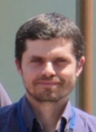
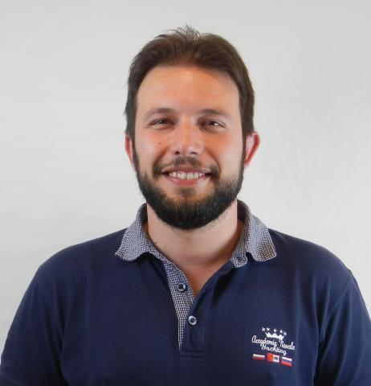

Corpo Docente 2024-2025
Il corpo docente del Master in Big Data Analytics è composto da professori, ricercatori e professionisti di grande esperienza nei settori del data mining, machine learning, big data analytics e intelligenza artificiale.
Chiara Boldrini
Istituto di Informatica e Telematica, CNR

Giovanni Comandè
Scuola Superiore Sant'Anna

Tiziano Fagni
Istituto di scienza e tecnologie dell'Informazione, CNR
Giulio Ferrigno
Scuola Superiore Sant'Anna

Riccardo Guidotti
Dipartimento d'Informatica, Università di Pisa

Angelica Lo Duca
Istituto di Informatica e Telematica, CNR

Anna Monreale
Dipartimento di Informatica, Università di Pisa

Mirco Nanni
Istituto di scienza e tecnologie dell'Informazione, CNR
Luca Pappalardo
Istituto di scienza e tecnologie dell'Informazione, CNR

Roberto Pellungrini
Dipartimento di Informatica, Università di Pisa
Marco Podda
Dipartimento di Informatica, Università di Pisa

Giuseppe Prencipe
Dipartimento di Informatica, Università di Pisa

Salvatore Trani
Istituto di scienza e tecnologie dell'Informazione, CNR
Vincenzo Lomonaco
Dipartimento d'Informatica, Università di Pisa
")
")
")
")
")
")
")
")
")